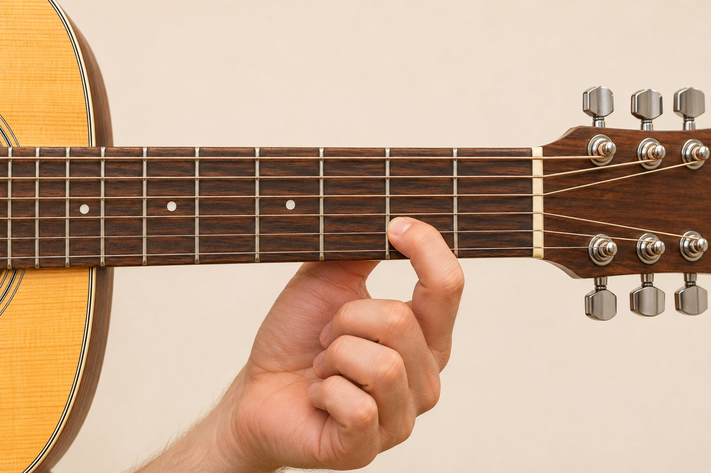
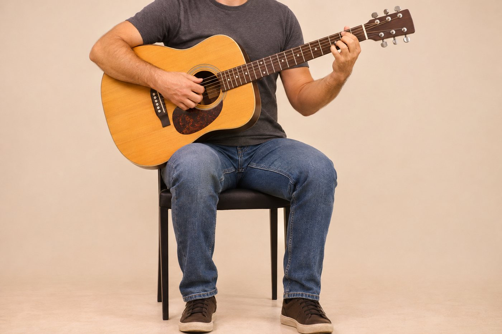
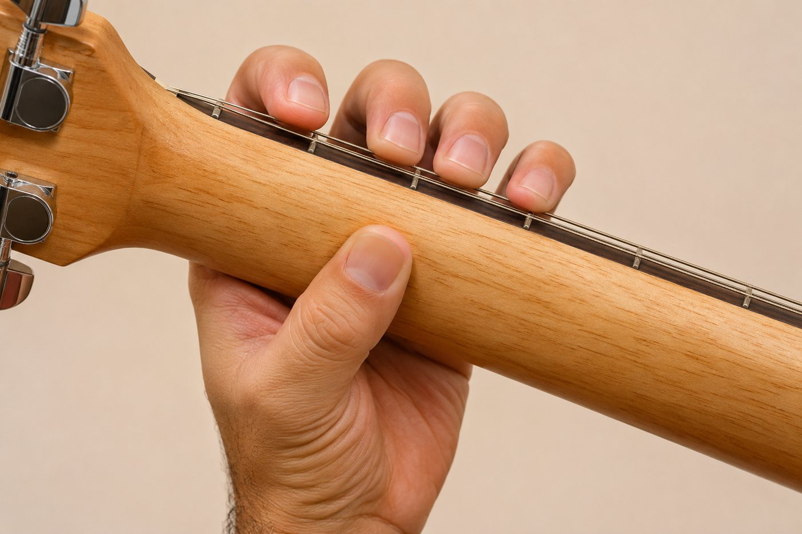
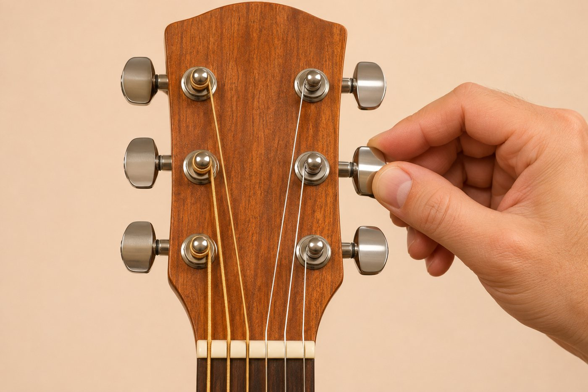
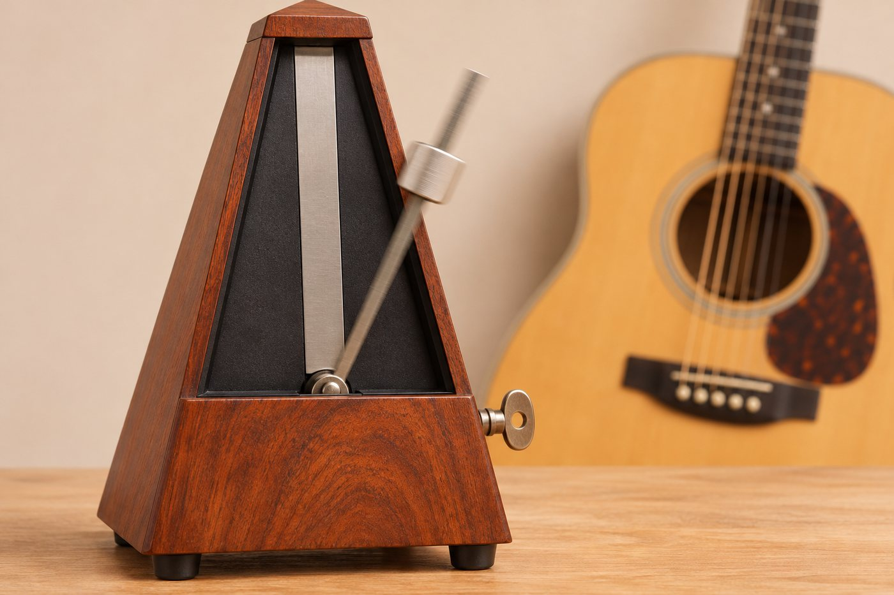
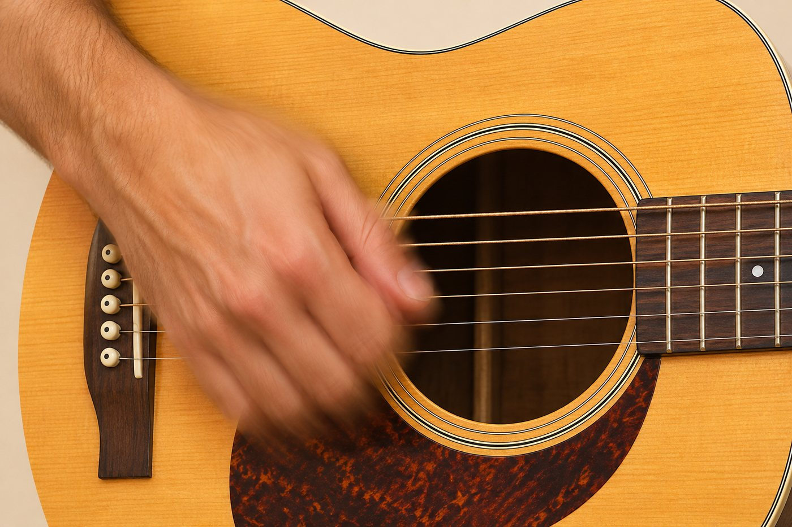
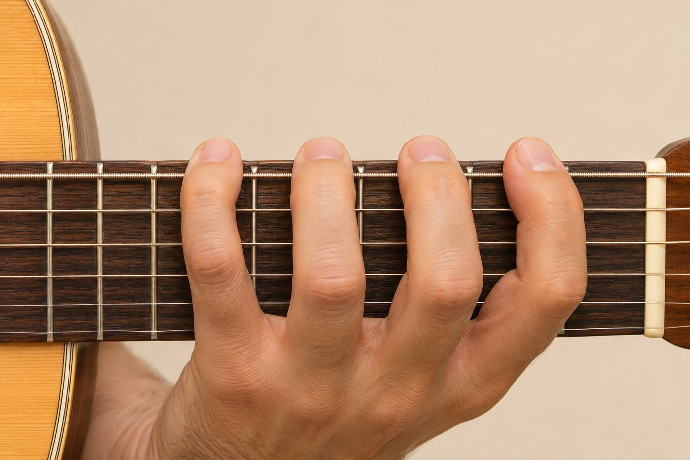
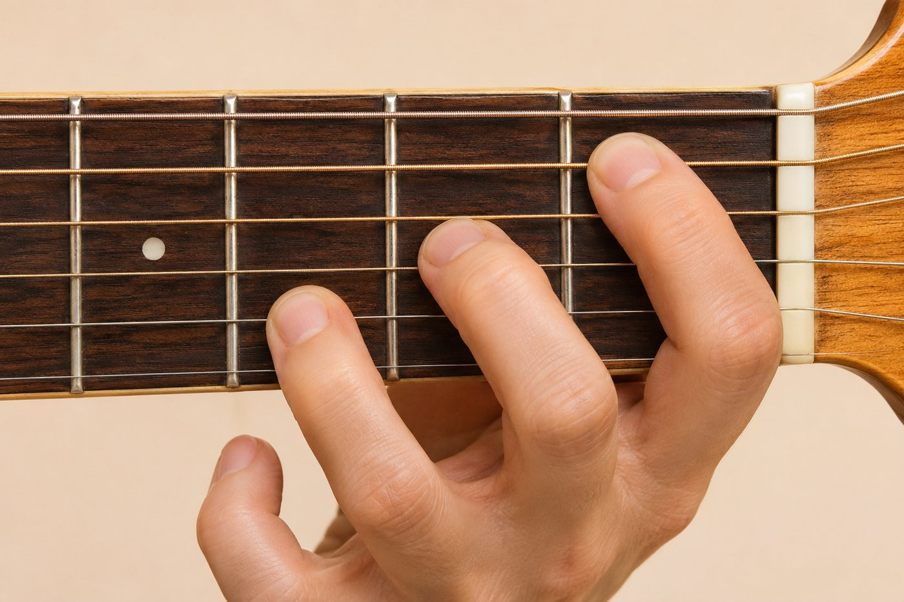

01Conhecendo o violãoAs partes do violão e para que serve cada uma · O nome e o número das seis cordas · O que são as casas e como contá-las · A numeração dos dedos usada em toda cifra4
02Ritmo, batida e BPMO que é pulso, tempo e compasso · O que significa BPM e como usar o metrônomo · Como ler uma batida com setas · Três batidas básicas usadas em louvor14
03As notas musicaisAs 7 notas naturais e as letras da cifra · O que são tom e semitom · Os sustenidos (#) e os bemóis (b) · As 12 notas da música24
04Escala cromáticaO que é a escala cromática · O mapa das notas no braço inteiro · O exercício 1-2-3-4 ("aranha") · Como achar qualquer nota em qualquer corda31
05AcordesO que é um acorde e como ler o diagrama · Os 7 acordes maiores e os 7 menores naturais · A diferença entre maior e menor · Acordes com sustenido e a técnica da pestana38
06GrausO que é tom (tonalidade) de uma música · A receita da escala maior: T T S T T T S · O que é grau e por que ele muda com o tom · Como descobrir o tom de uma música48
07Campo harmônicoO que é campo harmônico · A receita dos 7 acordes de um tom maior · O campo harmônico dos tons mais usados no violão · A relativa menor55
Meu progresso62
Como usar esta apostila
Esta apostila reúne os fundamentos do violão em 7 temas. Cada tema traz a teoria explicada passo a passo, desenhos do braço e dos acordes, exemplos e, no final, treinos para tocar: cada um diz para que serve, como fazer, em que velocidade começar e aonde chegar. Na última página, a ficha Meu progresso junta todos os treinos.
A ordem dos temas é a ordem de estudo sugerida: cada um usa o que foi visto antes.
01Conhecendo o violão
02Ritmo, batida e BPM
03As notas musicais
04Escala cromática
05Acordes
06Graus
07Campo harmônico
Os quadros
Como estudar
Pouco todo dia vale mais do que muito de vez em quando. 20 minutos por dia rendem mais do que 2 horas no sábado.
Divida o tempo: 5 min de afinação e aquecimento (aranha), 10 min do tema da semana, 5 min tocando uma música de que você gosta.
Use sempre o metrônomo, começando devagar.
Marque nos quadrinhos de cada treino os dias em que treinou ou o BPM que alcançou. Ver o número subir é o melhor incentivo.
Tema
01
Conhecendo o violão
Neste tema você vai aprender
As partes do violão e para que serve cada uma
O nome e o número das seis cordas
O que são as casas e como contá-las
A numeração dos dedos usada em toda cifra
A postura certa para tocar sem dor
1.1 As partes do violão
Antes de tocar a primeira nota, vale conhecer o instrumento pelo nome. Nas aulas, nas cifras e nos vídeos você vai ouvir esses termos o tempo todo, e saber onde fica cada parte evita confusão.
As partes do violão. Cada modelo muda um pouco o formato (e alguns não têm escudo), mas as partes são sempre as mesmas.
Parte
Para que serve
Mão (cabeça)
Ponta do braço onde ficam as tarraxas.
Tarraxas
Esticam ou afrouxam cada corda. É por elas que se afina o violão.
Pestana (nut)
Pecinha branca entre a mão e o braço. Apoia as cordas e marca o começo das casas.
Braço e escala
O braço é a parte comprida; a escala é a madeira por cima dele, onde os dedos apertam as cordas.
Trastes
As barrinhas de metal que atravessam a escala. Elas dividem o braço em casas.
Casa
O espaço entre dois trastes. É onde o dedo aperta.
Marcações
As bolinhas na escala (casas 3, 5, 7, 9 e 12). Servem de referência para achar as casas rápido.
Escudo
Placa que protege o tampo das batidas da mão ou da palheta. Nem todo violão tem.
Corpo, tampo e boca
A caixa de madeira que amplifica o som. O tampo é a madeira da frente; a boca é o furo redondo.
Cavalete e rastilho
O cavalete prende as cordas no corpo; o rastilho é a pecinha branca em cima dele, onde as cordas apoiam.
1.2 As seis cordas
O violão tem seis cordas. Elas são numeradas de baixo para cima, olhando o violão no colo: a 1ª corda é a mais fina (som mais agudo) e fica embaixo, perto do seu joelho; a 6ª corda é a mais grossa (som mais grave) e fica em cima, perto do seu rosto.
Cada corda solta (tocada sem apertar nenhuma casa) tem o nome de uma nota. Na afinação normal, chamada de afinação padrão, elas são:
Corda
Nota
Cifra
Como é
6ª
Mi
E
a mais grossa, grave
5ª
Lá
A
4ª
Ré
D
3ª
Sol
G
2ª
Si
B
1ª
Mi
E
a mais fina, aguda
1.3 As casas
As casas são contadas a partir da mão do violão: a primeira casa é a que fica logo depois da pestana (nut), a segunda vem em seguida, e assim por diante, em direção ao corpo.
O braço deitado, visto de quem está tocando: a 6ª corda em cima e a casa 1 à esquerda, junto da pestana. As bolinhas da madeira (3, 5, 7, 9 e a dupla do 12) ajudam a se localizar.
Corda solta = casa 0. Tocar a corda sem apertar nada.
Cada casa sobe meio tom. Quanto mais perto do corpo, mais aguda a nota.
Na casa 12 a nota se repete, uma oitava acima da corda solta. A casa 12 fica exatamente no meio da corda e por isso tem marcação dupla.

O dedo aperta logo atrás do traste, quase encostado nele.
1.4 Os dedos têm número
Mão esquerda
Em toda cifra, tablatura e diagrama de acorde, os dedos da mão esquerda (a que aperta as cordas) aparecem como números:
Nº
Dedo
1
indicador
2
médio
3
anelar
4
mínimo
P
polegar (fica atrás do braço)
A mão direita é a que toca as cordas: com os dedos, com o polegar ou com a palheta. Quem é canhoto e usa violão invertido troca as mãos, mas a numeração é a mesma.
1.5 Postura

Sentado, costas retas, violão na perna direita.

O polegar fica atrás do braço, relaxado.
Sente na ponta da cadeira, costas retas, ombros soltos.
O violão apoia na perna direita, com o braço levemente apontado para cima.
O polegar esquerdo fica atrás do braço, mais ou menos atrás do dedo 2, e não agarrando o braço por cima.
O pulso esquerdo fica reto ou levemente curvado, nunca dobrado em ângulo forte.
Os dedos apertam com a ponta, em pé, para não encostar nas cordas vizinhas.
Treinos Tema 01 · Conhecendo o violão
Antes de tocar, revise
O violão tem mão, braço, corpo e as peças que seguram as cordas (pestana, cavalete e rastilho).
As cordas são numeradas da mais fina (1ª, embaixo) para a mais grossa (6ª, em cima): Mi Lá Ré Sol Si Mi da 6ª para a 1ª.
Casas são os espaços entre os trastes, contados a partir da mão. Corda solta = casa 0; cada casa sobe meio tom.
Para quê: começar todo estudo com o violão afinado e decorar as cordas tocando, não lendo.

Abra o Afinador do app e afine as 6 cordas, da 6ª para a 1ª.
Toque cada corda solta 4 vezes dizendo o nome em voz alta: "Mi, Mi, Mi, Mi… Lá, Lá, Lá, Lá…".
Agora faça de trás para frente, da 1ª para a 6ª.
Desafio: alguém fala um nome ("Sol!") e você toca a corda sem olhar.
Está certo quando você toca qualquer corda que alguém pedir sem precisar pensar.
1º dia2º3º4º5º6º7ºmarque cada dia que treinou
Treino 2
Cordas soltas no pulso
5 min
Para quê: acostumar a mão direita a tocar uma corda de cada vez, no tempo do metrônomo.
Metrônomo em 60 BPM.
Toque a 6ª corda solta uma vez a cada clique, 4 cliques. Passe para a 5ª, depois 4ª… até a 1ª.
Volte da 1ª para a 6ª, sem parar o metrônomo.
Quando sair sem errar 2 vezes seguidas, suba 10 BPM.
Metrônomo começa em 60 BPM · meta 100 BPM
Está certo quando você troca de corda exatamente no clique, sem atrasar.
1º dia2º3º4º5º6º7ºanote o BPM em que tocou sem errar
Treino 3
Caminhada das casas
5 min
Para quê: apertar a corda no lugar certo (logo atrás do traste) e ouvir a nota limpa.
Use só o dedo 1. Na 1ª corda, toque a casa 0, 1, 2, 3… até a 12, uma por clique, a 60 BPM.
Em cada casa, aperte logo atrás do traste. Se chiar, aproxime o dedo do traste antes de apertar mais forte.
Volte da 12 até a 0.
Repita na 6ª corda.
Metrônomo começa em 60 BPM · meta 80 BPM
Está certo quando nenhuma nota chia e a casa 12 soa igual à corda solta, só que mais aguda.
1º dia2º3º4º5º6º7ºanote o BPM em que tocou sem errar
Treino 4
Conferir a postura
2 min
Para quê: evitar dor e vícios desde o primeiro dia.
Grave um vídeo curto de você tocando (celular apoiado, de frente).
Confira: costas retas? violão na perna direita? polegar atrás do braço? pulso sem dobrar forte? dedos apertando com a ponta?
Corrija o que estiver diferente da foto da página da postura e grave de novo.
Está certo quando o vídeo bate com os cinco pontos da postura.
1º dia2º3º4º5º6º7ºmarque cada dia que treinou
Tema
02
Ritmo, batida e BPM
Neste tema você vai aprender
O que é pulso, tempo e compasso
O que significa BPM e como usar o metrônomo
Como ler uma batida com setas
Três batidas básicas usadas em louvor
Um método para ganhar velocidade sem perder o tempo
2.1 Pulso e tempo
Toda música tem um pulso: uma batida constante que fica por baixo de tudo, como o coração da música. É o que você faz sem perceber quando bate o pé acompanhando uma canção. Cada uma dessas batidas do pé é um tempo.
Tocar com bom ritmo é, antes de tudo, não sair do pulso: nem correr, nem atrasar. Um violonista que troca acordes devagar mas mantém o tempo soa muito melhor do que um que toca rápido e "tropeça".
2.2 BPM e metrônomo
BPM quer dizer batidas por minuto. É a velocidade do pulso:
60 BPM = uma batida por segundo.
120 BPM = duas batidas por segundo (o dobro da velocidade).
Quanto maior o número, mais rápida a música.
O metrônomo é o aparelho (ou app) que faz um clique em cada tempo, na velocidade escolhida. Ele é o professor de ritmo mais honesto que existe: não deixa você correr nas partes fáceis nem atrasar nas difíceis.

60 BPM: um clique por segundo. Em dourado, o tempo 1 de cada compasso (o clique mais forte do metrônomo).120 BPM: dois cliques por segundo, no mesmo intervalo de tempo.
Faixa
BPM aproximado
Onde aparece
Lento
50 a 80
A maioria dos louvores de adoração. Os louvores do app medidos na gravação original ficam entre 51 e 80 BPM.
Moderado
80 a 110
Louvores mais animados, baladas pop.
Rápido
110 em diante
Celebração, músicas de abertura de culto.
2.3 Compasso: contando até 4
Os tempos se agrupam em compassos. Na grande maioria dos louvores, cada compasso tem 4 tempos e a gente conta 1, 2, 3, 4, 1, 2, 3, 4… O tempo 1 é o mais forte: é onde normalmente o acorde muda.
Para tocar batidas, dividimos cada tempo em duas metades. A contagem fica "1 e 2 e 3 e 4 e". O número é a metade de baixo; o "e" é a metade de cima.
2.4 Como ler uma batida

A mão direita desce e sobe sobre a boca do violão, como um pêndulo.
Nesta apostila as batidas aparecem em 8 espaços, um para cada parte da contagem:
Seta cheia para baixo = a mão desce tocando as cordas. Seta cheia para cima = a mão sobe tocando.
2.5 Três batidas para começar
Batida 1 · Quatro para baixo
Uma batida para baixo em cada tempo. A mão sobe no ar entre elas. É a base de tudo e já serve para acompanhar muitos louvores lentos.
Batida 2 · Baixo, baixo-cima
Conta-se "1, 2 e, 3, 4 e". Começa a dar movimento à música.
Batida 3 · A batida "pop" (baixo, baixo-cima, cima-baixo-cima)
Conta-se "1, 2 e, (3) e 4 e". No tempo 3 a mão desce no ar sem tocar. É a batida mais usada em louvor e em música pop no violão.
2.6 Como estudar com o metrônomo
Comece devagar: 60 ou 70 BPM. Devagar mesmo, a ponto de ficar fácil.
Toque a batida com um acorde só (ex.: Em) até ficar firme, quatro compassos seguidos sem errar.
Só então suba 5 BPM. Errou? Volte 5.
Quando estiver firme, troque entre dois acordes (ex.: Em e C) mantendo a batida.
Anote o BPM que você alcançou em cada dia. Ver o número subir motiva.
Treinos Tema 02 · Ritmo, batida e BPM
Antes de tocar, revise
Pulso é a batida constante da música; cada batida é um tempo.
BPM = batidas por minuto. 60 BPM = 1 por segundo. Louvores lentos ficam entre 50 e 80 BPM.
Compasso de 4 tempos: conta-se "1 e 2 e 3 e 4 e".
A mão direita nunca para: desce nos números e sobe nos "e". A batida muda pelo que toca e pelo que passa no ar.
Estude devagar e suba de 5 em 5 BPM.
Treino 1
Batida 1 contando em voz alta
5 min
Para quê: sentir o pulso e manter a mão direita no tempo.
Em
Monte o acorde de Em (o mais fácil: dois dedos).
Metrônomo em 60 BPM. Conte alto "1, 2, 3, 4" junto com os cliques.
Toque para baixo em cada número; a mão sobe no ar entre eles.
Toque 4 compassos seguidos sem parar. Conseguiu? Suba 5 BPM.
Metrônomo começa em 60 BPM · meta 90 BPM
Está certo quando a batida cai junto com o clique; você não ouve o clique "sozinho".
1º dia2º3º4º5º6º7ºanote o BPM em que tocou sem errar
Treino 2
Batida 2: baixo, baixo-cima
5 min
Para quê: começar a usar a subida da mão.
Em Em, a 60 BPM, conte "1, 2 e, 3, 4 e".
A mão não para: desce em todo número, sobe em todo "e". Só encosta nas cordas onde a seta é cheia.
4 compassos sem errar → suba 5 BPM.
Metrônomo começa em 60 BPM · meta 85 BPM
Está certo quando a subida soa mais fraquinha que a descida e cai bem no meio entre dois cliques.
1º dia2º3º4º5º6º7ºanote o BPM em que tocou sem errar
Treino 3
Batida 3, a "pop"
8 min
Para quê: dominar a batida mais usada em louvor.
Primeiro sem violão: bata na perna falando "baixo, baixo-cima, (ar)-cima-baixo-cima", 10 vezes.
No violão, só com as cordas abafadas (mão esquerda encostada sem apertar), a 55 BPM.
Agora com Em. Cuidado no tempo 3: a mão desce no ar, não para.
4 compassos limpos → suba 5 BPM.
Metrônomo começa em 55 BPM · meta 80 BPM
Está certo quando você toca 8 compassos seguidos sem pensar na batida.
1º dia2º3º4º5º6º7ºanote o BPM em que tocou sem errar
Treino 4
Trocar de acorde no tempo 1
5 min
Para quê: trocar de acorde sem deixar o ritmo cair.
EmCGD
Batida 1, 60 BPM. Toque Em por 2 compassos e C por 2 compassos, várias vezes.
Comece a trocar no "4": a mão esquerda já vai para o acorde seguinte enquanto a direita termina.
Quando estiver firme, faça G (2 compassos) → D (2 compassos).
Depois troque a cada 1 compasso.
Metrônomo começa em 60 BPM · meta 80 BPM
Está certo quando o primeiro toque do acorde novo cai exatamente no clique do tempo 1.
1º dia2º3º4º5º6º7ºanote o BPM em que tocou sem errar
Treino 5
Tocar junto com um louvor
5 min
Para quê: usar o ritmo numa música de verdade.
No app, abra um louvor da biblioteca (em Cifras) e veja o BPM dele.
Coloque o metrônomo nesse BPM e toque só a batida 1 com o primeiro acorde, para sentir a velocidade.
Toque a música inteira com a batida 1, mesmo que as trocas saiam atrasadas no começo.
Está certo quando você termina a música junto com a gravação.
1º dia2º3º4º5º6º7ºmarque cada dia que treinou
Tema
03
As notas musicais
Neste tema você vai aprender
As 7 notas naturais e as letras da cifra
O que são tom e semitom
Os sustenidos (#) e os bemóis (b)
As 12 notas da música
Por que não existe Mi# nem Si#
3.1 As 7 notas naturais
A música ocidental usa sete notas naturais, que se repetem em ciclo, do grave para o agudo:
Dó · Ré · Mi · Fá · Sol · Lá · Si · Dó…
Depois do Si vem de novo o Dó, só que mais agudo. A distância de um Dó até o próximo Dó se chama oitava.
As letras da cifra
Na cifra, cada nota é escrita com uma letra. O sistema começa no Lá (A), por isso o Dó é C:
Nota
Dó
Ré
Mi
Fá
Sol
Lá
Si
Cifra
C
D
E
F
G
A
B
3.2 Tom e semitom
A distância entre duas notas se mede em tons e semitons (meio tom):
Semitom (meio tom) = a menor distância entre duas notas. No violão, é uma casa.
Tom = dois semitons. No violão, são duas casas.
Na 5ª corda: de Lá (solta) para Si (casa 2) é um tom (duas casas). De Si (casa 2) para Dó (casa 3) é um semitom (uma casa).
3.3 Sustenido e bemol
Entre a maioria das notas naturais existe uma nota "do meio". Ela recebe o nome da vizinha com um símbolo:
Sustenido (#) = a nota sobe meio tom. Dó# (C#) é meio tom acima de Dó.
Bemol (b) = a nota desce meio tom. Réb (Db) é meio tom abaixo de Ré.
Repare que Dó# e Réb são a mesma nota, com dois nomes. No violão é a mesma casa. O nome muda conforme o tom da música, mas o som é igual. Isso se chama enarmonia.
Sustenido
C#
D#
F#
G#
A#
Mesmo som que
Db
Eb
Gb
Ab
Bb
3.4 As 12 notas
Juntando as naturais com os sustenidos, a música tem 12 notas diferentes. Depois delas, o ciclo recomeça:
C · C# · D · D# · E · F · F# · G · G# · A · A# · B · C…
As 12 notas na 5ª corda, da solta (Lá) até a casa 12 (Lá de novo). As escuras são as naturais; as brancas, os sustenidos. Repare que entre Si (casa 2) e Dó (casa 3) não sobra casa para um sustenido.
3.5 A pegadinha: Mi–Fá e Si–Dó
Entre Mi e Fá e entre Si e Dó a distância já é de meio tom. Não sobra espaço para uma nota no meio. Por isso, na prática, não se usa Mi# nem Si# (seriam o próprio Fá e o próprio Dó).
As 12 notas na 6ª corda, da solta (Mi) até a casa 12 (Mi de novo). Em dourado, os pares grudados Mi–Fá e Si–Dó: uma casa só de distância.
Treinos Tema 03 · As notas musicais
Antes de tocar, revise
Notas naturais: Dó Ré Mi Fá Sol Lá Si (C D E F G A B na cifra; A = Lá).
Semitom = 1 casa. Tom = 2 casas.
Sustenido (#) sobe meio tom; bemol (b) desce meio tom. C# e Db são a mesma nota.
A música tem 12 notas: C C# D D# E F F# G G# A A# B.
Mi–Fá e Si–Dó são grudados: não existe nota entre eles.
Treino 1
Notas naturais na 6ª corda
5 min
Para quê: achar as notas naturais da corda que dá nome aos acordes com pestana.
Toque as casas marcadas da 6ª corda, da solta até a 12, falando o nome de cada nota.
Repare nas casas 0→1 (Mi→Fá): só uma casa de distância.
Agora de trás para frente.
Depois, alguém fala uma nota e você acha a casa.
Metrônomo começa em 60 BPM · meta 90 BPM
Está certo quando você acha qualquer nota natural da 6ª corda em menos de 3 segundos.
1º dia2º3º4º5º6º7ºanote o BPM em que tocou sem errar
Treino 2
Notas naturais na 5ª corda
5 min
Para quê: a outra corda que dá nome aos acordes.
Mesma coisa do treino 1, agora na 5ª corda (começa em Lá).
Repare nas casas 2→3 (Si→Dó): uma casa só.
Alterne: uma nota na 6ª, a mesma nota na 5ª (ex.: Dó na casa 8 da 6ª e na casa 3 da 5ª).
Metrônomo começa em 60 BPM · meta 90 BPM
Está certo quando você acha cada nota nas duas cordas.
1º dia2º3º4º5º6º7ºanote o BPM em que tocou sem errar
Treino 3
Tom e semitom no ouvido
3 min
Para quê: ouvir a diferença entre meio tom e um tom.
Na 6ª corda toque casa 0 e casa 1 (Mi→Fá): é meio tom, soa "grudado".
Agora casa 1 e casa 3 (Fá→Sol): é um tom, soa mais aberto.
Feche os olhos e peça para alguém tocar um dos dois. Diga se foi tom ou semitom.
Está certo quando você acerta 8 de 10 vezes.
1º dia2º3º4º5º6º7ºmarque cada dia que treinou
Treino 4
Caça aos sustenidos
3 min
Para quê: saber onde ficam as notas com #.
Na 6ª corda, toque só as casas douradas, falando o nome: Fá#, Sol#, Lá#, Dó#, Ré#.
Repare que cada # fica entre duas naturais, e que não há nada entre Mi–Fá e Si–Dó.
No app: Exercícios › Notas no braço, 2 minutos. Anote quantas acertou.
Está certo quando você não precisa contar casas para achar um sustenido.
1º dia2º3º4º5º6º7ºmarque cada dia que treinou
Tema
04
Escala cromática
Neste tema você vai aprender
O que é a escala cromática
O mapa das notas no braço inteiro
O exercício 1-2-3-4 ("aranha")
Como achar qualquer nota em qualquer corda
4.1 O que é
A escala cromática é a escala com todas as 12 notas, uma depois da outra, sempre de meio em meio tom. No violão, isso é simples: é tocar casa por casa, sem pular nenhuma.
C · C# · D · D# · E · F · F# · G · G# · A · A# · B · C
Ela não é uma "música". É uma ferramenta de estudo com duas funções:
Teoria: conhecer onde está cada nota no braço.
Técnica: dar força, independência e precisão para os quatro dedos da mão esquerda.
4.2 O mapa do braço
Este é o mapa de todas as notas da casa 0 à casa 12, em todas as cordas. As notas naturais estão em escuro; os sustenidos, em branco.
Mapa completo das notas do braço, casa 0 (solta) à casa 12. Da casa 12 em diante, tudo se repete igual.
Atalho: a mesma nota em outra corda
A casa 5 de uma corda tem a mesma nota da corda solta de baixo (a próxima mais fina). Exemplo: casa 5 da 6ª corda = Lá = 5ª corda solta. A única exceção é a 3ª corda: a nota da 2ª corda solta (Si) está na casa 4 dela. Esse é o mesmo truque usado para afinar o violão de ouvido.
4.3 O exercício 1-2-3-4 ("aranha")

Um dedo em cada casa, todos arqueados, apertando com a ponta.
É o exercício cromático mais famoso. A regra é um dedo para cada casa: dedo 1 na casa 1, dedo 2 na casa 2, dedo 3 na casa 3, dedo 4 na casa 4.
Toque 1-2-3-4 na 6ª corda, depois 1-2-3-4 na 5ª, e assim até a 1ª corda. Depois volte, 4-3-2-1, da 1ª até a 6ª.
Coloque o metrônomo em 60 BPM e toque uma nota por clique.
Ao subir para o dedo seguinte, deixe o anterior apertado (na subida). Isso força a independência dos dedos.
Os dedos ficam perto das cordas, sem levantar demais quando soltam.
Quando estiver limpo, toque duas notas por clique (1 e 2 e…) na mesma velocidade.
Depois, mude de lugar: faça na casa 5 a 8 (dedo 1 na casa 5), onde as casas são menores, e vá descendo até a casa 1.
Variações (quando o 1-2-3-4 estiver fácil)
Variação
Ordem dos dedos
O que treina
A
1-3-2-4
independência do 2 e do 3
B
1-2-4-3
controle do dedo 4
C
1-4-2-3
abertura da mão
D
4-3-2-1 na subida
mesma coisa ao contrário
Treinos Tema 04 · Escala cromática
Antes de tocar, revise
Escala cromática = as 12 notas em sequência, de meio em meio tom (casa por casa).
Serve para conhecer as notas no braço e para dar técnica aos dedos.
Casa 5 de uma corda = próxima corda solta (na 3ª corda, é a casa 4).
Aranha 1-2-3-4: um dedo por casa, devagar, com metrônomo.
Treino 1
Aranha 1-2-3-4 (casas 1 a 4)
5 min
Para quê: força, precisão e independência dos quatro dedos.
Um dedo por casa: dedo 1 na casa 1, dedo 2 na 2, dedo 3 na 3, dedo 4 na 4.
Comece na 6ª corda: 1-2-3-4. Passe para a 5ª: 1-2-3-4. Até a 1ª corda.
Volte: 4-3-2-1 da 1ª até a 6ª.
Uma nota por clique. 2 vezes sem errar → suba 5 BPM.
Metrônomo começa em 60 BPM · meta 100 BPM
Está certo quando todas as notas soam do mesmo volume e nenhuma chia.
1º dia2º3º4º5º6º7ºanote o BPM em que tocou sem errar
Treino 2
Aranha mais à frente (casas 5 a 8)
4 min
Para quê: o mesmo exercício com casas menores, mais confortável para a mão.
Dedo 1 na casa 5. Faça o 1-2-3-4 em todas as cordas, subindo e descendo.
Ao terminar, desça uma casa (dedo 1 na casa 4) e repita. Continue descendo até a casa 1.
Metrônomo começa em 60 BPM · meta 100 BPM
Está certo quando você chega à casa 1 sem cansar a mão.
1º dia2º3º4º5º6º7ºanote o BPM em que tocou sem errar
Treino 3
Deixar o dedo apertado
3 min
Para quê: independência: um dedo se mexe e os outros ficam no lugar.
Na 6ª corda: aperte o dedo 1. Ao tocar o 2, mantenha o 1 apertado. Ao tocar o 3, mantenha 1 e 2. Ao tocar o 4, os quatro estão apertados.
Passe para a 5ª corda levantando um dedo de cada vez.
Devagar: 50 BPM é suficiente.
Metrônomo começa em 50 BPM · meta 70 BPM
Está certo quando os dedos levantam só o necessário, perto das cordas.
1º dia2º3º4º5º6º7ºanote o BPM em que tocou sem errar
Treino 4
Variações da aranha
4 min
Para quê: quebrar o "piloto automático" dos dedos.
Faça a aranha nas ordens: 1-3-2-4, depois 1-2-4-3, depois 1-4-2-3.
Uma ordem por dia, em todas as cordas, subindo e descendo.
Metrônomo começa em 50 BPM · meta 80 BPM
Está certo quando a variação sai no mesmo BPM do 1-2-3-4.
1º dia2º3º4º5º6º7ºanote o BPM em que tocou sem errar
Treino 5
Duas notas por clique
3 min
Para quê: ganhar velocidade de verdade sem correr.
Volte ao 1-2-3-4 nas casas 1 a 4, metrônomo no BPM mais baixo que você usou no treino 1.
Agora toque duas notas por clique (conte "1 e 2 e").
Só suba o BPM quando estiver tão limpo quanto com uma nota por clique.
Metrônomo começa em 50 BPM · meta 80 BPM
Está certo quando as notas ficam iguaizinhas, como um relógio.
1º dia2º3º4º5º6º7ºanote o BPM em que tocou sem errar
Tema
05
Acordes
Neste tema você vai aprender
O que é um acorde e como ler o diagrama
Os 7 acordes maiores e os 7 menores naturais
A diferença entre maior e menor
Acordes com sustenido e a técnica da pestana
Por que o mesmo acorde tem vários desenhos
5.1 O que é um acorde
Acorde é um conjunto de três ou mais notas tocadas ao mesmo tempo. É o que fazemos no violão para acompanhar uma música. Na cifra, o acorde aparece escrito em cima da letra da música, no ponto em que deve ser tocado.
O nome do acorde vem da sua nota principal, chamada tônica (ou fundamental): o acorde de C (Dó) é construído a partir da nota Dó.

Num acorde, os dedos ficam em pé (arqueados) para não abafar as cordas vizinhas.
5.2 Como ler um diagrama de acorde
Acorde de C (Dó maior)
O diagrama é o braço em pé, de frente para você, como se o violão estivesse pendurado na parede:
Linhas em pé = as cordas. A da esquerda é a 6ª (grossa); a da direita é a 1ª (fina).
Linhas deitadas = os trastes. A grossa em cima é a pestana (nut).
Bolinha com número = onde apertar e com qual dedo.
○ em cima = corda solta, toca sem apertar.
× em cima = essa corda não deve soar.
Número ao lado (ex.: 3ª) = o desenho começa naquela casa, e não na primeira.
5.3 Os 7 acordes maiores
Os acordes maiores têm som aberto, "alegre", resolvido. Na cifra, são escritos só com a letra: C, D, E, F, G, A, B.
CDEFGAB
5.4 Os 7 acordes menores
Os acordes menores têm som mais fechado, "triste" ou introspectivo. Na cifra, levam um m minúsculo depois da letra: Cm, Dm, Em, Fm, Gm, Am, Bm.
CmDmEmFmGmAmBm
5.5 Maior × menor: um dedo de diferença
A diferença entre um acorde maior e o menor da mesma nota é uma única nota (a terça) que desce meio tom. Em vários desenhos isso é visível: muda um dedo só.
E→Em
A→Am
D→Dm
Em dourado, a nota que muda. De E para Em, o dedo 1 sai da 3ª corda (que passa a soar solta). De A para Am, a nota da 2ª corda desce uma casa. De D para Dm, a nota da 1ª corda desce uma casa.
5.6 Acordes com sustenido e a pestana
Como existem 12 notas, existem 12 acordes maiores e 12 menores, 24 ao todo. Os acordes com sustenido (C#, D#, F#, G#, A# e seus menores) quase sempre são feitos com pestana: o dedo 1 deitado, apertando várias cordas na mesma casa.
F#F#mC#mG#mA#
Maiores
C
C#
D
D#
E
F
F#
G
G#
A
A#
B
Menores
Cm
C#m
Dm
D#m
Em
Fm
F#m
Gm
G#m
Am
A#m
Bm
Os 24 acordes básicos. Pela regra do Tema 3, não existem acordes de E# nem de B#.
5.7 O mesmo acorde, vários desenhos
Um acorde é um conjunto de notas, não um desenho. Como cada nota aparece em vários lugares do braço (Tema 4), o mesmo acorde pode ser montado em várias regiões. O som é o mesmo acorde; muda a altura e o "colorido".
Três desenhos de G (Sol maior)
G · abertoG · pestana na 3ªG · pestana na 10ª
Três desenhos de C (Dó maior)
C · abertoC · pestana na 3ªC · pestana na 8ª
Os moldes que andam
Repare que o desenho de F (pestana na casa 1) é o desenho de E empurrado uma casa para frente, com a pestana fazendo o papel da pestana do violão. Esse molde pode ser levado para qualquer casa: o nome do acorde é a nota da 6ª corda onde está a pestana. O mesmo vale para o molde de A, com o nome dado pela 5ª corda.
Casa da pestana
1
2
3
4
5
6
7
8
9
10
11
12
Molde de E (6ª corda)
F
F#
G
G#
A
A#
B
C
C#
D
D#
E
Molde de A (5ª corda)
A#
B
C
C#
D
D#
E
F
F#
G
G#
A
Com só dois desenhos de pestana (e a versão menor de cada um: Fm e Bm), você toca os 24 acordes. É por isso que vale a pena saber as notas da 6ª e da 5ª corda.
Treinos Tema 05 · Acordes
Antes de tocar, revise
Acorde = 3 ou mais notas juntas. O nome vem da tônica.
Maior: só a letra (C). Menor: letra + m (Cm). Diferença: uma nota meio tom abaixo.
Existem 24 acordes básicos: 12 maiores e 12 menores.
Sustenidos quase sempre usam pestana (dedo 1 deitado).
O mesmo acorde tem vários desenhos no braço; os moldes de E e A com pestana andam por todas as casas.
Treino 1
Montar e conferir cada acorde
8 min
Para quê: cada acorde soar limpo antes de pensar em ritmo.
EEmAAmDCG
Monte o acorde olhando o desenho.
Toque corda por corda, da mais grossa para a mais fina. Alguma não soou ou chiou? Ajuste o dedo (mais em pé, mais perto do traste).
Solte a mão, sacuda, e monte de novo sem olhar. Repita 5 vezes.
Marque na grade o dia em que o acorde saiu limpo de primeira.
Está certo quando você monta o acorde sem olhar e todas as cordas soam.
1º dia2º3º4º5º6º7ºmarque cada dia que treinou
Treino 2
Troca de 1 minuto
5 min
Para quê: trocar de acorde rápido, o maior desafio de quem começa.
Escolha um par: Em↔C, G↔D, Am↔E, C↔G ou D↔A.
Marque 1 minuto no celular. Toque um acorde (uma batida para baixo), troque, toque o outro… Conte quantas trocas limpas fez.
Anote o número. Amanhã, tente bater o seu recorde.
Está certo quando você passa de 30 trocas por minuto (meta de quem já toca louvor com tranquilidade).
1º dia2º3º4º5º6º7ºanote quantas trocas limpas fez
Treino 3
Maior e menor, lado a lado
3 min
Para quê: mover só o dedo que muda e treinar o ouvido.
Batida 1, 60 BPM: E (1 compasso) → Em (1 compasso), várias vezes. Mexa só o dedo que sai.
Faça o mesmo com A → Am e D → Dm.
Feche os olhos: peça para alguém tocar um dos dois e diga se é maior ou menor.
Metrônomo começa em 60 BPM · meta 80 BPM
Está certo quando você reconhece maior e menor só pelo som.
1º dia2º3º4º5º6º7ºanote o BPM em que tocou sem errar
Treino 4
Pestana sem sofrimento
5 min
Para quê: construir força e jeito para a pestana aos poucos.
Comece pela casa 5 (é mais fácil que a casa 1): deite o dedo 1 sobre as 6 cordas, logo atrás do traste.
Toque corda por corda. Gire o dedo um pouquinho para o lado do polegar até todas soarem.
Agora monte o molde de E completo na casa 5 (é um A). Toque 4 vezes, solte a mão, descanse.
A cada dia, desça uma casa: 5, 4, 3, 2… até chegar ao F na casa 1.
Está certo quando o F soa com as 6 cordas sem a mão doer.
1º dia2º3º4º5º6º7ºmarque cada dia que treinou
Treino 5
Um acorde, três lugares
3 min
Para quê: ver na prática que o mesmo acorde mora em várias partes do braço.
G abertoG na 3ªG na 10ª
Batida 1, 60 BPM: G aberto (1 compasso) → G na 3ª casa (1 compasso) → G na 10ª (1 compasso).
Ouça: é o mesmo acorde, cada um com um "brilho" diferente.
Está certo quando você troca entre os três sem parar a batida.
1º dia2º3º4º5º6º7ºmarque cada dia que treinou
Tema
06
Graus
Neste tema você vai aprender
O que é tom (tonalidade) de uma música
A receita da escala maior: T T S T T T S
O que é grau e por que ele muda com o tom
Como descobrir o tom de uma música
Como trocar uma música de tom usando graus
6.1 O tom da música
Quando dizemos que um louvor está "em Sol", estamos dizendo que o centro dele é a nota Sol. É a nota (e o acorde) onde a música "chega em casa", a sensação de repouso. Isso é a tonalidade, ou simplesmente o tom da música.
6.2 A escala maior: a receita
Todo tom maior usa 7 notas, escolhidas das 12 com uma receita fixa de distâncias:
T · T · S · T · T · T · S
(T = tom, duas casas · S = semitom, uma casa)
Partindo de Dó e aplicando a receita, saem as 7 notas naturais, sem nenhum sustenido. Por isso Dó maior é o tom mais simples e é por ele que se começa a estudar teoria.
Os degraus da escala de Dó. Os números são os graus. Os semitons caem entre o 3 e o 4 (Mi–Fá) e entre o 7 e o 8 (Si–Dó).
Aplicando a mesma receita a partir de Sol, a 7ª nota precisa de um sustenido (F#) para a conta fechar:
Mesma receita, outro ponto de partida. O Fá vira Fá# para manter o semitom entre os graus 7 e 8.
6.3 O que é grau
Grau é a posição de uma nota (ou acorde) dentro do tom. O grau 1 é sempre a nota que dá nome ao tom; os outros são contados a partir dele. Por isso o grau de uma nota depende do tom:
Grau
1
2
3
4
5
6
7
Tom de C
C
D
E
F
G
A
B
Tom de G
G
A
B
C
D
E
F#
Tom de D
D
E
F#
G
A
B
C#
Tom de A
A
B
C#
D
E
F#
G#
Tom de E
E
F#
G#
A
B
C#
D#
Veja a nota Sol (G): no tom de C ela é o grau 5; no tom de G ela é o grau 1; no tom de D ela é o grau 4. É a mesma nota, ocupando "cargos" diferentes em cada tom.
6.4 Como descobrir o tom de uma música
Escute (ou toque) até o final. O acorde em que a música termina e "repousa" quase sempre é o grau 1. Muitas vezes é também o primeiro acorde.
Confira os outros acordes: eles devem caber no campo harmônico desse tom (Tema 7).
Se houver dúvida entre dois tons, cante a nota que parece "casa". Ela é a tônica.
6.5 Para que servem os graus: trocar de tom
Quem pensa em graus enxerga a "forma" da música, não só as letras. Isso permite tocar a mesma música em qualquer tom, para ajustar à voz de quem canta.
Graus
1
5
6m
4
Tom de C
C
G
Am
F
Tom de G
G
D
Em
C
Tom de D
D
A
Bm
G
Tom de A
A
E
F#m
D
A sequência 1 – 5 – 6m – 4 é a mesma "música" nos quatro tons; só mudam as letras.
Treinos Tema 06 · Graus
Antes de tocar, revise
Tom (tonalidade) é o centro da música, onde ela repousa.
Escala maior = receita T T S T T T S a partir da tônica. Dó maior não tem sustenidos.
Grau = posição da nota no tom. O grau 1 é sempre a tônica. A mesma nota muda de grau quando muda o tom.
Em Dó, Sol é o grau 5. Em Sol, Sol é o grau 1 e Dó é o grau 4.
Para descobrir o tom: veja onde a música termina e confira se os acordes cabem no campo harmônico.
Treino 1
Escala de Dó cantando os graus
5 min
Para quê: sentir no ouvido e nos dedos o que é grau.
Escala de Dó maior na região das primeiras casas. O número é o grau; o grau 1 está em dourado.
Toque as notas na ordem dos graus, 1 a 8, uma por clique, cantando o número: "um, dois, três…".
Desça de 8 até 1.
Toque só 1 – 3 – 5 – 8 (os graus do acorde de C) e depois o acorde de C: perceba que são as mesmas notas.
Metrônomo começa em 60 BPM · meta 90 BPM
Está certo quando você canta o grau certo sem olhar o desenho.
1º dia2º3º4º5º6º7ºanote o BPM em que tocou sem errar
Treino 2
Escala de Sol cantando os graus
5 min
Para quê: ver que a receita é a mesma em outro tom.
Escala de Sol maior. O grau 7 é Fá# (casa 4 da 4ª corda).
Mesmo exercício do treino 1, agora a partir do Sol (6ª corda, casa 3).
Repare que o grau 4 do tom de Sol é o Dó.
Metrônomo começa em 60 BPM · meta 90 BPM
Está certo quando você canta "um" no Sol e "quatro" no Dó sem hesitar.
1º dia2º3º4º5º6º7ºanote o BPM em que tocou sem errar
Treino 3
A mesma sequência em três tons
6 min
Para quê: tocar pensando em graus, não em letras.
Batida 1 ou 3, 70 BPM. Toque 1 – 5 – 6m – 4 em C: C G Am F (se o F ainda for difícil, use só os dedos nas 4 cordas finas).
Agora em G: G D Em C.
Agora em D: D A Bm G.
Fale os graus em voz alta enquanto toca: "um, cinco, seis menor, quatro".
Metrônomo começa em 60 BPM · meta 80 BPM
Está certo quando você muda de tom sem precisar olhar a tabela.
1º dia2º3º4º5º6º7ºanote o BPM em que tocou sem errar
Treino 4
Descobrir o tom de um louvor
5 min
Para quê: usar o ouvido para achar o grau 1.
Escolha um louvor que você conhece bem e cante o final dele.
Procure no violão o acorde que soa como "casa" nesse final (tente G, D, A, E, C).
Confira na cifra do app se o tom bate. Anote o louvor e o tom.
Está certo quando você acerta o tom de 3 louvores sem olhar a cifra.
1º dia2º3º4º5º6º7ºmarque cada dia que treinou
Tema
07
Campo harmônico
Neste tema você vai aprender
O que é campo harmônico
A receita dos 7 acordes de um tom maior
O campo harmônico dos tons mais usados no violão
A relativa menor
As sequências de acordes mais comuns em louvor
7.1 O que é
No Tema 6 vimos que cada tom tem 7 notas. Se montarmos um acorde sobre cada uma dessas notas, usando só notas do próprio tom, obtemos os 7 acordes "da família" daquele tom. Esse conjunto é o campo harmônico.
Na prática: quase todos os acordes de uma música saem do campo harmônico do tom dela. Conhecer o campo é saber, de antemão, quais acordes provavelmente vão aparecer.
7.2 A receita do tom maior
Em qualquer tom maior, os tipos de acorde em cada grau são sempre os mesmos:
Grau
1
2
3
4
5
6
7
Tipo
Maior
menor
menor
Maior
Maior
menor
meio-dim.
Romano
I
IIm
IIIm
IV
V
VIm
VIIm7(b5)
7.3 Os campos mais usados
Tom
1
2m
3m
4
5
6m
7m7(b5)
C
C
Dm
Em
F
G
Am
Bm7(b5)
D
D
Em
F#m
G
A
Bm
C#m7(b5)
E
E
F#m
G#m
A
B
C#m
D#m7(b5)
F
F
Gm
Am
Bb
C
Dm
Em7(b5)
G
G
Am
Bm
C
D
Em
F#m7(b5)
A
A
Bm
C#m
D
E
F#m
G#m7(b5)
Tons que soam bem e são confortáveis no violão: C, D, E, G e A. F também aparece bastante em louvores.
O campo de G no braço
G · 1Am · 2mBm · 3mC · 4D · 5Em · 6m
Os seis acordes mais usados do tom de Sol. Com eles se toca uma quantidade enorme de louvores.
7.4 A relativa menor
O grau 6m tem um papel especial: ele é a relativa menor do tom. Am é a relativa de C; Em é a relativa de G. Os dois tons usam exatamente as mesmas notas e os mesmos acordes, só que o centro (a "casa") muda.
Campo de Lá menor (Am)
Am
Bm7(b5)
C
Dm
Em
F
G
Grau no tom menor
1m
2m7(b5)
3
4m
5m
6
7
Os mesmos acordes do campo de C, começando do Am. Uma música que repousa em Am está em Lá menor; se repousa em C, está em Dó maior.
7.5 Sequências que mais aparecem
Sequência
Em C
Em G
Em D
1 – 5 – 6m – 4
C G Am F
G D Em C
D A Bm G
1 – 4 – 5
C F G
G C D
D G A
6m – 4 – 1 – 5
Am F C G
Em C G D
Bm G D A
1 – 6m – 4 – 5
C Am F G
G Em C D
D Bm G A
4 – 5 – 6m
F G Am
C D Em
G A Bm
Treinos Tema 07 · Campo harmônico
Antes de tocar, revise
Campo harmônico = os 7 acordes formados com as notas de um tom.
Receita do tom maior: 1 Maior, 2m, 3m, 4 Maior, 5 Maior, 6m, 7m7(b5).
O 6m é a relativa menor: mesmas notas e acordes, centro diferente.
Os graus 1, 4, 5 e 6m são a base da maioria dos louvores.
Acordes de fora do campo existem, mas são exceção.
Treino 1
Campo de Sol subindo e descendo
5 min
Para quê: gravar no ouvido e nos dedos os acordes da família de Sol.
G · 1Am · 2mBm · 3mC · 4D · 5Em · 6m
Batida 1, 60 BPM, 1 compasso por acorde: G Am Bm C D Em, e de volta.
Fale o grau de cada um ao trocar.
Bm com pestana ainda difícil? Toque só as 4 cordas finas (x x 4 4 3 2).
Metrônomo começa em 60 BPM · meta 80 BPM
Está certo quando você toca o campo inteiro sem parar a batida.
1º dia2º3º4º5º6º7ºanote o BPM em que tocou sem errar
Treino 2
Sequências de louvor em Sol
8 min
Para quê: treinar as combinações que mais aparecem nas músicas.
Batida 3, 70 BPM, 1 acorde por compasso. Toque cada sequência 4 vezes:
G D Em C (1–5–6m–4)
G C D (1–4–5)
Em C G D (6m–4–1–5)
G Em C D (1–6m–4–5)
Metrônomo começa em 60 BPM · meta 90 BPM
Está certo quando você reconhece alguma dessas sequências em louvores que já conhece.
1º dia2º3º4º5º6º7ºanote o BPM em que tocou sem errar
Treino 3
As mesmas sequências em Ré
6 min
Para quê: levar o campo para outro tom.
Campo de Ré: D Em F#m G A Bm.
Toque D A Bm G, D G A, Bm G D A e D Bm G A, batida 3, 70 BPM.
F#m e Bm com pestana: use a versão nas 4 cordas finas enquanto a pestana não estiver firme.
Metrônomo começa em 60 BPM · meta 85 BPM
Está certo quando você troca de tom e as sequências continuam soando "iguais", só mais agudas ou graves.
1º dia2º3º4º5º6º7ºanote o BPM em que tocou sem errar
Treino 4
Sentir a relativa menor
3 min
Para quê: ouvir que o mesmo grupo de acordes pode ter outra "casa".
Toque C F G C várias vezes: a "casa" é C.
Agora Am Dm Em Am: a mesma família de acordes (campo de Dó), mas a casa virou Am.
Faça o mesmo com G C D G e depois Em Am Bm Em.
Está certo quando você sente onde a música repousa em cada caso.
1º dia2º3º4º5º6º7ºmarque cada dia que treinou
Treino 5
Tocar um louvor inteiro pelos graus
10 min
Para quê: juntar tudo numa música de verdade.
Abra um louvor da biblioteca do app. Descubra o tom (Tema 6).
Escreva em cima de cada acorde da cifra o grau (1, 4, 5, 6m…).
Toque a música com a batida 3 no BPM da gravação.
Desafio: mude o tom no app e toque de novo, lendo pelos graus.
Está certo quando você toca a música em dois tons diferentes.
1º dia2º3º4º5º6º7ºmarque cada dia que treinou
Meu progresso
Marque cada treino quando chegar no "está certo quando". Os de metrônomo mostram a meta de BPM.